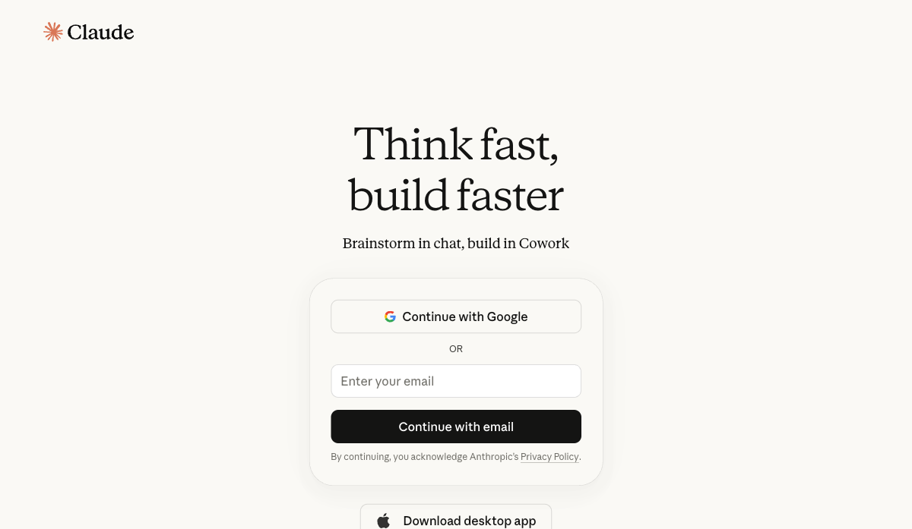
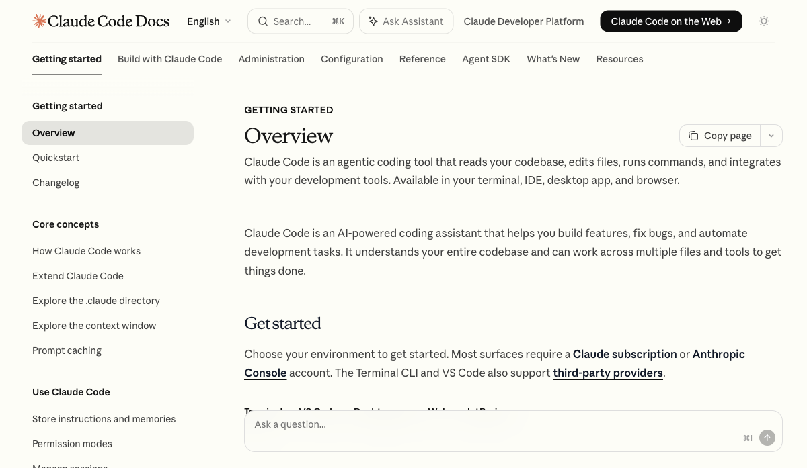
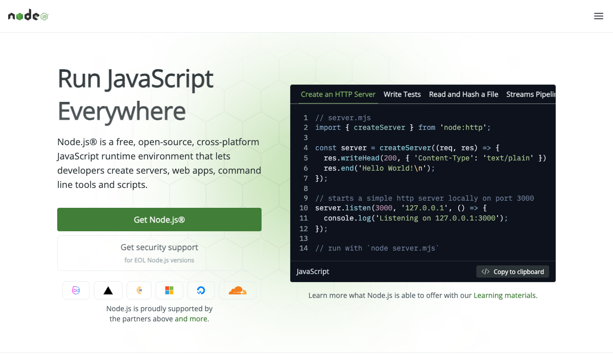
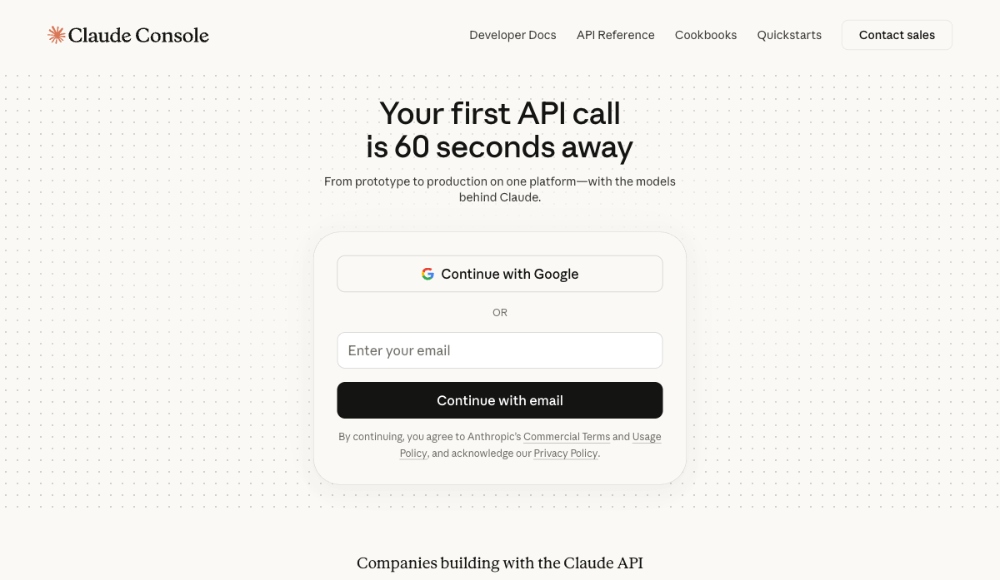

שמעתי על מישהו שנתן לצ׳אטבוט להכין לו סיכום יומי. הוא הגדיר את הפרומפט בקפידה, הדביק אותו כל בוקר, קרא את התשובה, נאנח, וסגר את הטאב. זה לקח לו ארבע דקות. כל בוקר. כל יום. במשך שלושה חודשים. בגדול, הוא אוטומייט את הדביקה של הפרומפט.
זה בדיוק מה שרוב האנשים עושים עם AI, ומה שהסדרה הזו בנויה לשנות.
יאללה, בואו נצלול.
לפני שפותחים טרמינל, צריך להבין מה אנחנו בונים בכלל.
Claude.ai, האתר, הוא כמו לשלוח הודעה למישהו חכם. אתם/ן שולחות שאלה, הוא עונה. הוא יושב בצד השני של המסך, לא רואה כלום מהמחשב שלכם, לא יכול לגעת בשום קובץ.

Claude Code זה משהו אחר לגמרי. זה כלי שמותקן על המחשב שלכם, רץ בטרמינל, ויש לו גישה לקבצים שלכם, יכול להריץ פקודות, יכול לקרוא ולכתוב. כמו שמזמינים מישהו לשבת ליד המחשב שלכם ולהריץ דברים בשבילכם.
Claude Code: כלי CLI מבית Anthropic שמריץ את מודל Claude ישירות על המחשב שלכם, עם גישה לקבצים, לטרמינל ולסביבת העבודה.

אתם/ן נותנות/ים לו מטרה. לא הוראה. לא שאלה. מטרה. "סכם לי את כל הדוחות מהשבוע האחרון ושמור את הסיכום."
המודל מסתכל על מה שיש לו, מתכנן צעדים, מבצע פעולה (קורא קובץ, כותב טקסט, מריץ פקודה), רואה מה קרה, ומתכנן את הצעד הבא. זה לא תשובה אחת. זו סדרה של פעולות שמסתיימת כשהמטרה הושגה.
עובדה חביבה: Claude Code הוא open source לגמרי. הקוד שלו זמין ב-GitHub ואפשר לראות בדיוק מה הוא עושה תחת המכסה.
מחשב: Mac או Windows. המדריך הזה מצולם על Mac, אבל כמעט כל הפקודות זהות.
טרמינל: תוכנה שבה נותנים למחשב הוראות בטקסט, לא עם עכבר. ב-Mac זה אפליקציה שנקראת Terminal. זה לא מפחיד, זה בדיוק כמו לשלוח הודעות למחשב, רק שהמחשב מבצע אותן מיד.
Node.js גרסה 18 ומעלה: runtime שמאפשר להריץ קוד JavaScript על המחשב. Claude Code בנוי על גביו.
חשבון Anthropic ומפתח API: לא מנוי ל-Claude.ai. חשבון ב-console.anthropic.com שמשתמש ב-pay-per-use. עלות ריצה אחת לאייג׳נט פשוט: בין 0.01 ל-0.05 דולר.
פותחים Terminal. ב-Mac: לוחצים Cmd+Space, מקלידים "Terminal", לוחצים Enter.
מקלידים:
node --version
אם רואים משהו כמו v18.17.0 או גבוה יותר, מצוין. עוברים לשלב 2.
אם רואים command not found, Node.js לא מותקן. הולכות/ים ל-nodejs.org, מורידות/ים את גרסת ה-LTS:

עובדה חביבה: Node.js שוחרר ב-2009 על ידי Ryan Dahl. כיום כמעט 100 מיליון מפתחות/ים משתמשות/ים בו. הוא לא הולך לשום מקום.
עכשיו שיש Node.js, מתקינות/ים Claude Code. בטרמינל:
npm install -g @anthropic-ai/claude-code
אחרי שהסתיים, מוודאות/ים:
claude --version
הולכות/ים ל-console.anthropic.com:

בסרגל השמאלי, לוחצות/ים על "API Keys". לוחצות/ים "Create Key". נותנות/ים לו שם, לדוגמה my-agents.
ואז, הדבר הכי חשוב במדריך: מעתיקות/ים את המפתח מיד. אחרי שסוגרות/ים את החלון, לעולם לא תראו אותו שוב. המפתח נראה כך: sk-ant-api03-...
עכשיו בחזרה לטרמינל:
export ANTHROPIC_API_KEY="YOUR_KEY_HERE"
זה עובד, אבל נעלם כשסוגרים Terminal. כדי שיעבוד תמיד:
echo 'export ANTHROPIC_API_KEY="YOUR_KEY_HERE"' >> ~/.zshrc source ~/.zshrc
בטרמינל:
cd ~/Desktop mkdir morning-agent cd morning-agent
CLAUDE.md: קובץ טקסט רגיל בשם CLAUDE.md שיושב בתיקיית הפרויקט. Claude Code קורא אותו אוטומטית בכל הרצה. זה תיאור התפקיד, הכללים, והסמכויות של האייג׳נט.
ליצור את הקובץ:
touch CLAUDE.md code CLAUDE.md
מדביקות/ים את התוכן הבא:
# Morning Briefing Agent You are a morning briefing assistant. Every time you run, you: 1. Read all .txt and .md files in the /reports/ folder 2. Compare what you find with the previous state saved in memory.md 3. Write a short summary (max 5 bullet points) of what changed since last time 4. Save the summary to today-summary.md with today's date in the filename 5. Update memory.md with the current state Your personality: concise, factual, no fluff. Write in Hebrew. Rules you must always follow: - Never delete any files - Never read files outside the /reports/ folder - If a file seems corrupted or unreadable, note it and skip it, don't stop - If you are not sure what to do, write "לא ברור" and stop. Don't guess. When you are done, tell me: "סיימתי. הסיכום שמור ב-[filename]"
mkdir .claude touch .claude/settings.json code .claude/settings.json
מדביקות/ים:
{
"permissions": {
"allow": [
"Read",
"Write(reports/*)",
"Write(*.md)",
"Bash(ls:*)",
"Bash(cat:*)"
],
"deny": [
"Bash(rm:*)",
"Bash(curl:*)",
"Bash(wget:*)"
]
}
}
עובדה חביבה: הרשאות ב-settings.json חזקות יותר מהוראות ב-CLAUDE.md. גם אם תכתבו "delete old files" ב-CLAUDE.md, Bash(rm:*) ב-deny תחסום את זה בכל מקרה. ה-deny הוא ה-veto הסופי.
mkdir reports echo "Meeting notes: discussed Q3 targets, agreed on roadmap" > reports/2026-05-27-meeting.txt claude
מקלידות/ים:
תריץ את המשימה שלך לפי ה-CLAUDE.md
מוסיפות/ים שתי הוראות ל-CLAUDE.md. בתחילת הקובץ, אחרי הכותרת:
Before starting any task: - Check if memory.md exists in this folder - If it does, read it. It contains what you found in previous runs. - Use it to compare: what changed? what is new? what disappeared?
ובסוף הקובץ:
After completing the task: - Write or update memory.md - Include: today's date, list of files you read, one-line summary of what you found - This file is your memory. Keep it current.
אכן.
crontab -e
מוסיפות/ים:
0 8 * * * cd ~/Desktop/morning-agent && claude --print "תריץ את המשימה שלך לפי ה-CLAUDE.md" >> agent-log.txt 2>&1
0 8 * * * אומר: בדיוק ב-8:00 בבוקר, כל יום. הדגל --print מריץ את Claude Code בלי ממשק ובלי שאלות. משתמשים בו רק אחרי שבדקנו שהאייג׳נט ידוע ובטוח.
האייג׳נט שבנינו עכשיו הוא פשוט גרידא. הוא קורא קבצים, מסכם, זוכר. אבל המבנה שסביבו, CLAUDE.md, settings.json, memory.md, זה בדיוק אותו מבנה שבונים אייג׳נטים הרבה יותר מורכבים עליו.
ה-CLAUDE.md הוא ה-DNA. ה-settings.json הוא הגבולות. ה-memory.md הוא מה שהופך ריצה חד-פעמית לתהליך שמתפתח עם הזמן.
בחלק השלישי והאחרון של הסדרה, נבנה את אותו האייג׳נט בדיוק, הפעם עם n8n, בלי שורת קוד אחת.
אתם/ן כבר בניתם/ן אייג׳נט שרץ על המחשב שלכם/ן? באה לי לשמוע איפה נתקעתם/ן ומה גרם לו לעשות משהו שלא ציפיתם. כותבים/ות לי. 🙏